Contents
Tutorial 2 - Introduction to MATLAB Graphics
by Edward Fine
close all; clc; clear all;
Basic Plotting
Functions: plot, box off, axis tight: xlabel, ylabel, get, set, hold on
x = 0:0.5:10; y1 = x; y2 = x.^2; y3 = sqrt(x); y4 = log10(x(2:end)); figure('Color', [1 1 1]); h = plot(x, y1); box off; grid on; hold on; set(h,'Linewidth', 3); set(h, 'Color', [.4 .4 1]); h = plot(x,y1, '.'); xlabel('x-axis'); ylabel('y-axis'); set(h,'MarkerSize', 18); set(h, 'Color', [1 .3 .3]); axis tight; figure('Color', [1 1 1]); h = plot(x,y2); box off; grid on; hold on; set(h,'Linewidth', 3); set(h, 'Color', [.6 .6 1]); h = plot(x,y2, '.'); xlabel('x-axis'); ylabel('y-axis'); set(h,'MarkerSize', 18); set(h, 'Color', [1 .3 .3]); axis tight; figure('Color', [1 1 1]); h = plot( x, y3); box off; grid on; hold on; set(h,'Linewidth', 3); set(h, 'Color', [.6 .6 1]); h = plot(x,y3, '.'); xlabel('x-axis'); ylabel('y-axis'); set(h,'MarkerSize', 18); set(h, 'Color', [1 .3 .3]); axis tight; figure('Color', [1 1 1]); h = plot( x(2:end), y4); box off; grid on; hold on; set(h,'Linewidth', 3); set(h, 'Color', [.6 .6 1]); h = plot(x(2:end),y4, '.'); xlabel('x-axis'); ylabel('y-axis'); set(h,'MarkerSize', 18); set(h, 'Color', [1 .3 .3]); axis tight;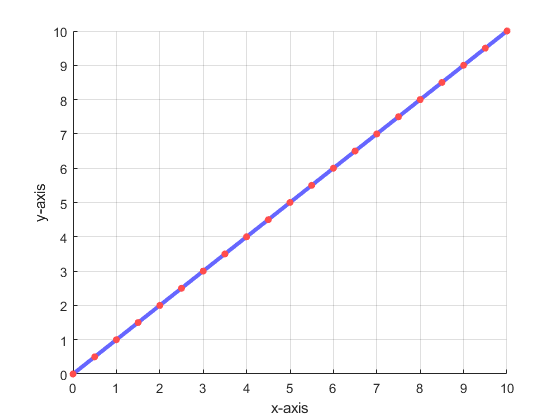 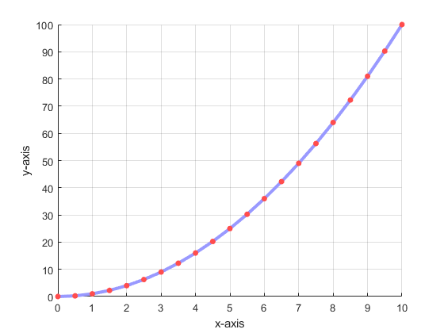 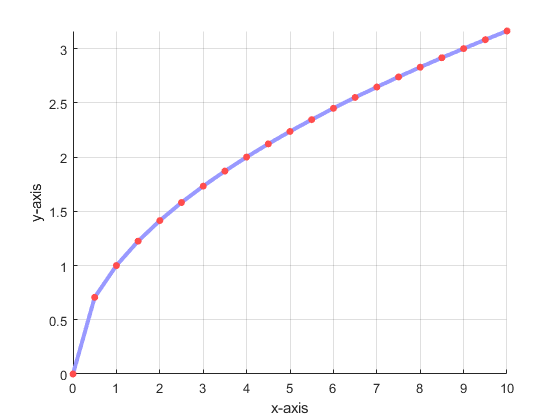 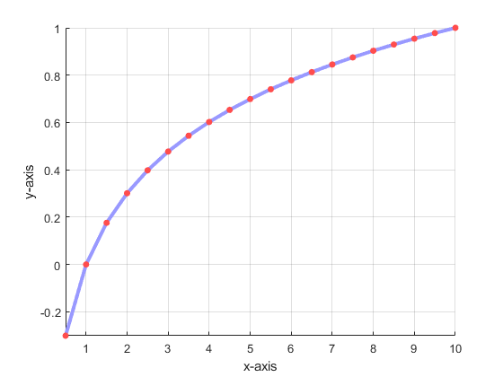
Subplots
Functions: subplot
figure('Color', [1 1 1]); subplot(2,2,1); h = plot(x, y1); box off; grid on; hold on; set(h,'Linewidth', 3); set(h, 'Color', [.4 .4 1]); h = plot(x,y1, '.'); xlabel('x-axis'); ylabel('y-axis'); set(h,'MarkerSize', 18); set(h, 'Color', [1 .3 .3]); axis tight; subplot(2,2,2); h = plot(x,y2); box off; grid on; hold on; set(h,'Linewidth', 3); set(h, 'Color', [.6 .6 1]); h = plot(x,y2, '.'); xlabel('x-axis'); ylabel('y-axis'); set(h,'MarkerSize', 18); set(h, 'Color', [1 .3 .3]); axis tight; subplot(2,2,3); h = plot( x, y3); box off; grid on; hold on; set(h,'Linewidth', 3); set(h, 'Color', [.6 .6 1]); h = plot(x,y3, '.'); xlabel('x-axis'); ylabel('y-axis'); set(h,'MarkerSize', 18); set(h, 'Color', [1 .3 .3]); axis tight; subplot(2,2,4); h = plot( x(2:end), y4); box off; grid on; hold on; set(h,'Linewidth', 3); set(h, 'Color', [.6 .6 1]); h = plot(x(2:end),y4, '.'); xlabel('x-axis'); ylabel('y-axis'); set(h,'MarkerSize', 18); set(h, 'Color', [1 .3 .3]); axis tight; figure('Color', [1 1 1]); subplot(4,1,1); h = plot(x, y1); box off; grid on; hold on; set(h,'Linewidth', 3); set(h, 'Color', [.4 .4 1]); h = plot(x,y1, '.'); xlabel('x-axis'); ylabel('y-axis'); set(h,'MarkerSize', 18); set(h, 'Color', [1 .3 .3]); axis tight; subplot(4,1,2); h = plot(x,y2); box off; grid on; hold on; set(h,'Linewidth', 3); set(h, 'Color', [.6 .6 1]); h = plot(x,y2, '.'); xlabel('x-axis'); ylabel('y-axis'); set(h,'MarkerSize', 18); set(h, 'Color', [1 .3 .3]); axis tight; subplot(4,1,3); h = plot( x, y3); box off; grid on; hold on; set(h,'Linewidth', 3); set(h, 'Color', [.6 .6 1]); h = plot(x,y3, '.'); xlabel('x-axis'); ylabel('y-axis'); set(h,'MarkerSize', 18); set(h, 'Color', [1 .3 .3]); axis tight; subplot(4,1,4); h = plot( x(2:end), y4); box off; grid on; hold on; set(h,'Linewidth', 3); set(h, 'Color', [.6 .6 1]); h = plot(x(2:end),y4, '.'); xlabel('x-axis'); ylabel('y-axis'); set(h,'MarkerSize', 18); set(h, 'Color', [1 .3 .3]); axis tight;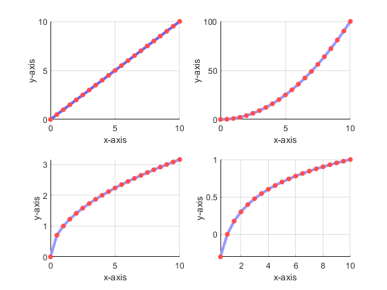 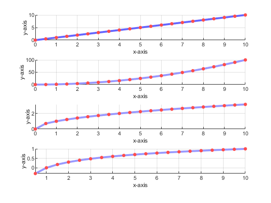
Plotting Sinusoidal Signals
Topic: Sampling Frequency, Sampling Period, etc x(t) = 5cos(2pi3t) x(t) = 5cos(2pi3t) + 1cos(2*pi*60*t)
fs = 16*3; % Sampling Frequency Ts = 1/fs; % Sampling period n = 0:fs; % Samples t = n*Ts; % Sampling instances x = 5*cos(2*pi*3*t); % Sampled signal figure('Color', [1 1 1]); h = plot(t,x); box off; set(h, 'LineWidth', 3); set(h,'Color', [0.6 0.6 1]); hold on; h = plot(t,x, '.'); box off; set(h, 'MarkerSize', 18); set(h,'Color', [0.1 0.1 1]); xlabel('Time (s)'); ylabel('Voltage (mV)'); print -dtiff -r300 mysinusoid; fs = 16*60; % Sampling Frequency Ts = 1/fs; % Sampling period n = 0:fs; % Samples t = n*Ts; % Sampling instances x = 5*cos(2*pi*3*t) + 1*cos(2*pi*60*t); % Sampled signal figure('Color', [1 1 1]); h = plot(t,x); box off; set(h, 'LineWidth', 3); set(h,'Color', [0.6 0.6 1]); hold on; xlabel('Time (s)'); ylabel('Voltage (mV)'); print -dtiff -r300 mysinusoid;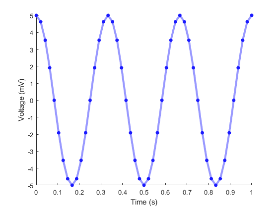 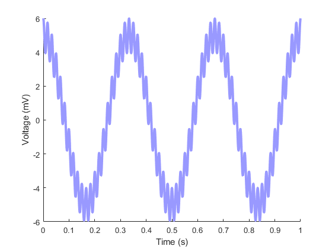
Plotting random numbers, histograms, etc
Functions: rand, randn, histogram
figure('Color', [1 1 1]); x1 = rand(3,1000); subplot(3,1,1); plot(x1(1,:)); subplot(3,1,2); plot(x1(2,:)); subplot(3,1,3); plot(x1(3,:)); figure('Color', [1 1 1]); histogram(x1(1,:)); figure('Color', [1 1 1]); x2 = randn(3,1000); subplot(3,1,1); plot(x2(1,:)); subplot(3,1,2); plot(x2(2,:)); subplot(3,1,3); plot(x2(3,:)); figure('Color', [1 1 1]); histogram(x2(1,:)); figure('Color', [1 1 1]); histogram(sum(x1));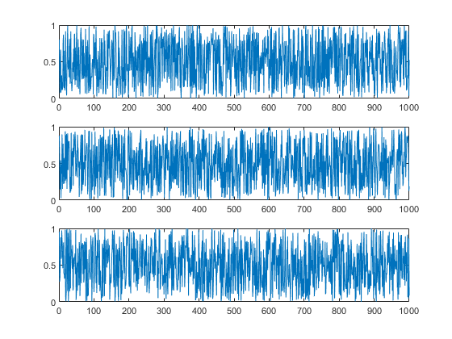 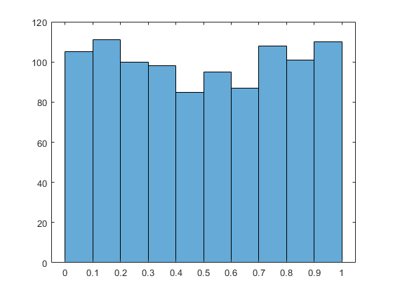 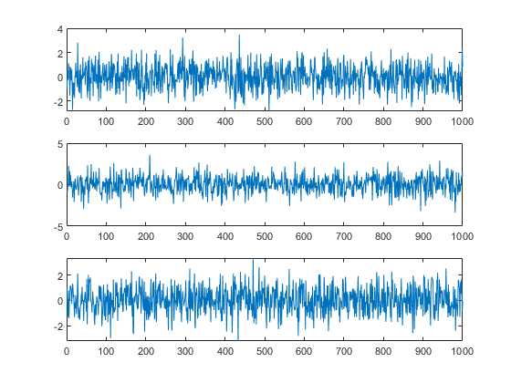 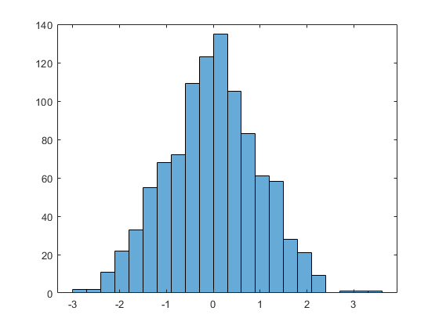 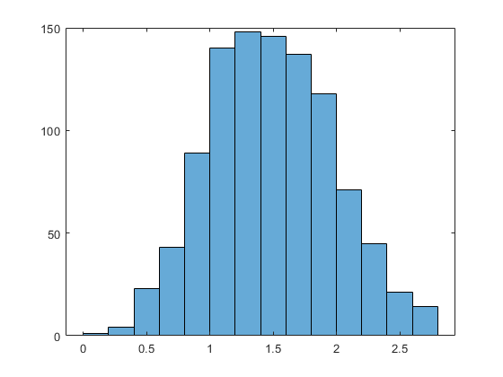
3D Plots
Functions: view, rotate3d, mesh, meshgrid, meshc
[X,Y] = meshgrid(-2:.2:2, -2:.2:2); Z = X.*exp(-X.^2 - Y.^2); figure('Color', [1 1 1]); surf(X,Y,Z); figure('Color', [1 1 1]); mesh(X,Y,Z); figure('Color', [1 1 1]); meshc(X,Y,Z);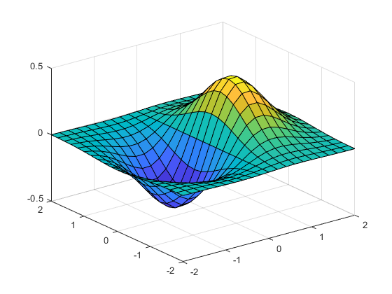 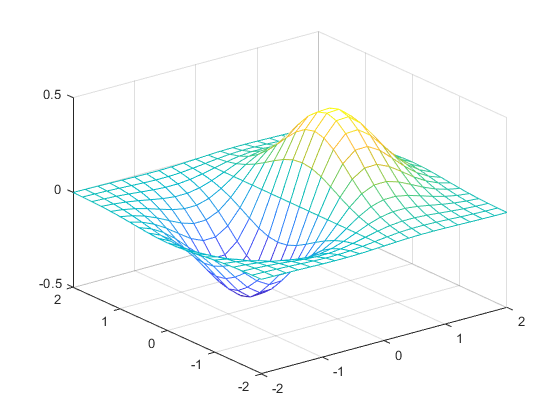 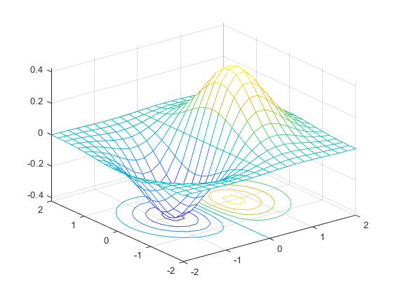
MATLAB to solve MATH problems
exp(i*pi) + 1
ans = 0.0000e+00 + 1.2246e-16i